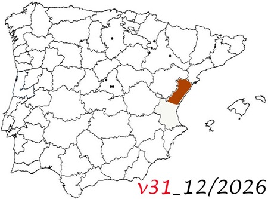

31. Travels through the province of Castellón
31. Travels through the province of Castellón
December 26–29, 2026
On this trip I travelled through
© 2016 - All Rights Reserved - Designed by Sergio López Martínez
![[Valid RSS]](https://www.onepointsync.com/wp-content/uploads/2016/08/valid-rss-rogers.png "Validate my RSS feed")